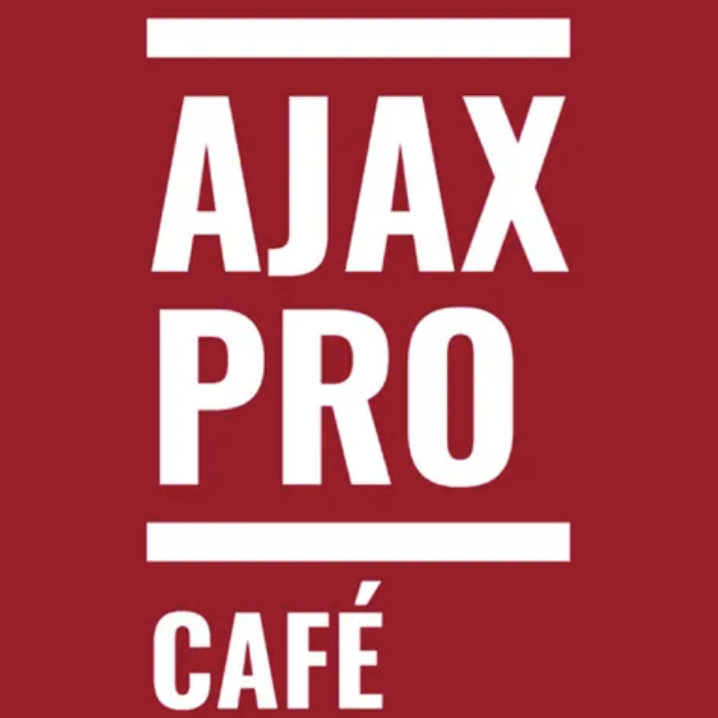

Podcast AJAXPRO CAFÉ Volg en luister via jouw favoriete platform. Spotify Apple Podcasts Alle luisterappsVoor Ajacieden die verder kijken.
Ajax-nieuws, transferpraat, analyses en tools voor Ajacieden.
Opstellingmaker
Maak en deel jouw ideale Ajax-opstelling.
Maak je opstellingYouTube
Analyses, transfers en wedstrijdpraat.
Tussen de linies
Columns over Ajax, twijfel, frustratie en hoop.
Wedstrijdprogramma
Alle komende Ajax-wedstrijden.
Alles rond Ajax op één plek
Wat is AjaxPro?
AjaxPro is een communityplatform voor Ajacieden. Volg analyses en transfernieuws, praat mee op Discord, bekijk video's en gebruik onze Ajax-tools.
Veelgestelde vragen
Wat maakt AjaxPro op YouTube?
Op het YouTube-kanaal van AjaxPro vind je onder meer AjaxPro Dossier, wedstrijdanalyses, podcasts en video's over het laatste nieuws rond Ajax.
Waar kan ik de AjaxPro-podcast luisteren?
AjaxPro Café is te beluisteren via jouw favoriete luisterapp. Op YouTube delen we daarnaast podcasts, analyses en andere videoreeksen over Ajax.
Waar kan ik columns en langere verhalen over Ajax lezen?
Op onze Substack Tussen de linies publiceren we columns en langere stukken over Ajax, met ruimte voor analyse, twijfel, frustratie en hoop.
Waar kan ik AjaxPro volgen?
Je vindt AjaxPro op X, Instagram, YouTube. AjaxPro Café is te beluisteren via jouw favoriete luisterapp en onze columns verschijnen op Substack.
Waar kan ik meepraten over Ajax-transfers?
In de AjaxPro Discord praat je mee in transfer-talk en volg je transfer-updates. Er zijn ook aparte gesprekken over Jong Ajax en de jeugd.
Kan ik tijdens Ajax-wedstrijden live meepraten?
Ja. Tijdens Ajax-wedstrijden wordt er volop live meegepraat in de wedstrijdbespreking op Discord. De live wedstrijdtopics behoren dan tot de drukste plekken van de community.
Hoe word ik lid van de AjaxPro Discord?
Open de uitnodigingslink en sluit je gratis aan. Daarna kun je meepraten over wedstrijden, transfers, Jong Ajax, supporterszaken, podcasts, kroegpraat en andere discussiepunten.